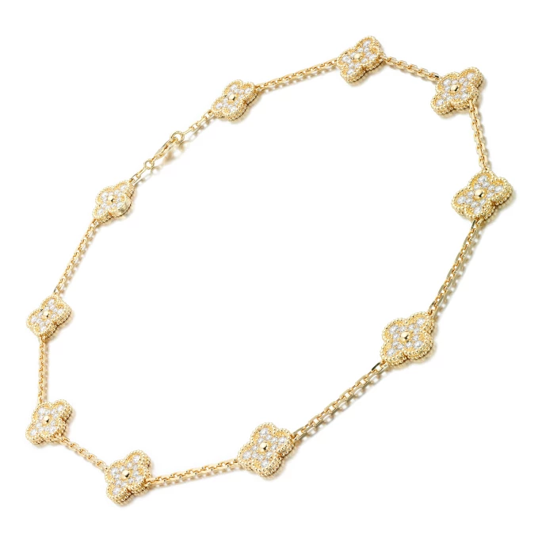
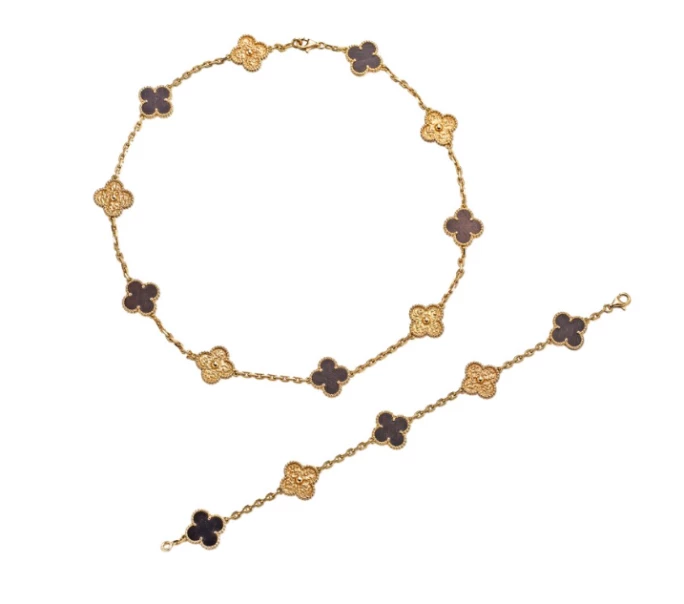
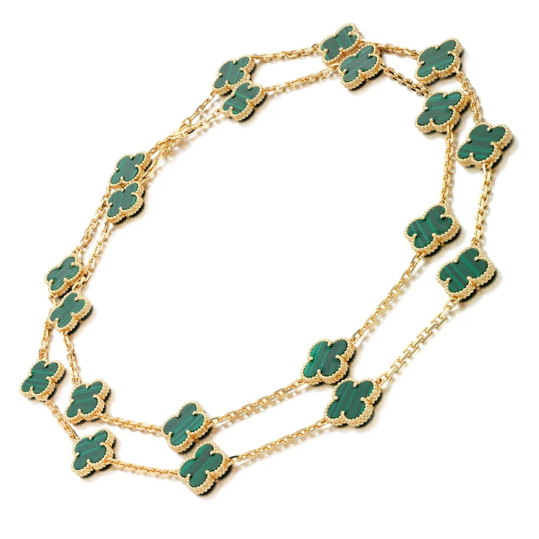

譯自 Lydia Dokko · Sotheby's
探尋梵克雅寶 Alhambra 系列的永恆魅力，追溯其歷史軌跡與靈感泉源，見證這個集時尚與幸運於一身的經典符號如何成就不朽傳奇。
梵克雅寶 Alhambra傳奇初章
20 世紀中葉，法國頂級珠寶世家梵克雅寶敏銳捕捉到新時代女性不斷變化的需求。當時，大家渴求的不只是點綴晚宴禮服的華貴珠寶，更是能為日常裝扮增添風采的精緻飾品。為此，1954 年，品牌在巴黎開設「La Boutique」，推出一系列時尚、百搭且價格相對親民的半寶石首飾。在諸多創新之作中，1968 年面世的 Alhambra 系列最為耀眼，日後更成為品牌的經典象徵。

梵克雅寶 Alhambra創作緣起
梵克雅寶 Alhambra 系列的靈感源自象徵幸運的四葉草，以及源於建築傳統的摩爾式四瓣花紋。其名稱致敬西班牙格拉納達的阿爾罕布拉宮，這座宮殿以其氣勢磅礴的拱門與精緻的幾何圖案聞名於世。這些元素在 Alhambra 的四葉草圖案中得到完美呈現，配以品牌標誌性的珠飾邊框，展現出系列的優雅特色。
首個 Alhambra 設計是一條飾有 20 個四葉草圖案的歌劇長項鏈。這條項鏈不僅是一件珠寶，更是一件展現優雅魅力的藝術臻品。踏入 1970 年代，Alhambra 系列迅速風靡，尤其備受名流青睞。摩納哥王妃葛麗絲·凱莉（Grace Kelly）便是其中最著名的擁躉，她以巧妙疊戴各種寶石組合的項鏈聞名，從珊瑚、孔雀石到水晶、玳瑁，創造出獨具一格的個人風範。
華彩變奏的梵克雅寶 Alhambra
在半世紀的傳承中，梵克雅寶 Alhambra 系列不斷推陳出新，成為高級珠寶界最具收藏價值的經典圖案之一。新作品融入各式半寶石與珍貴材質，包括紅玉髓、縞瑪瑙、虎眼石、綠松石、珍珠母貝與鑽石。Magic Alhambra、Sweet Alhambra、Pure Alhambra、Lucky Alhambra 和 Byzantine Alhambra 等特別系列為這經典設計注入新意，延續不朽魅力。

Vintage Alhambra 項鏈套裝
其中，Vintage Alhambra 系列尤為矚目，以珍稀的蛇紋木（bois d'amourette）精製而成，這種帶有天然斑紋的紅棕色木材更顯獨特。系列匯集傳統櫥櫃製作大師與鑲嵌工藝師的精湛技藝，成就非凡品質，彰顯梵克雅寶對卓越工藝的不懈追求。

梵克雅寶 Alhambra 手鐲
這個傳奇系列的成就不僅體現在項鏈上。如今，Alhambra 圖案已廣泛應用於戒指、手鐲、耳環，甚至腕錶之上，成為品牌最觸目的標誌，一眼可辨。憑藉其深厚的歷史積澱與幸運的美好寓意，Alhambra 已然成為梵克雅寶的代名詞。
梵克雅寶 Alhambra 系列超越了珠寶的範疇，成為永恆設計、精湛工藝與文化底蘊的完美詮釋。它將藝術、傳承與多元完美融合，在高級珠寶界佔有不可撼動的地位。歷經數十載，Alhambra 系列始終令人心馳神往，為藏家與愛好者所珍視。它不僅體現了優雅的精髓，更承載著幸運的祝願。從 1968 年初綻光芒至今，Alhambra 不斷演繹新意，始終是優雅風格與精緻品味的永恆象徵。